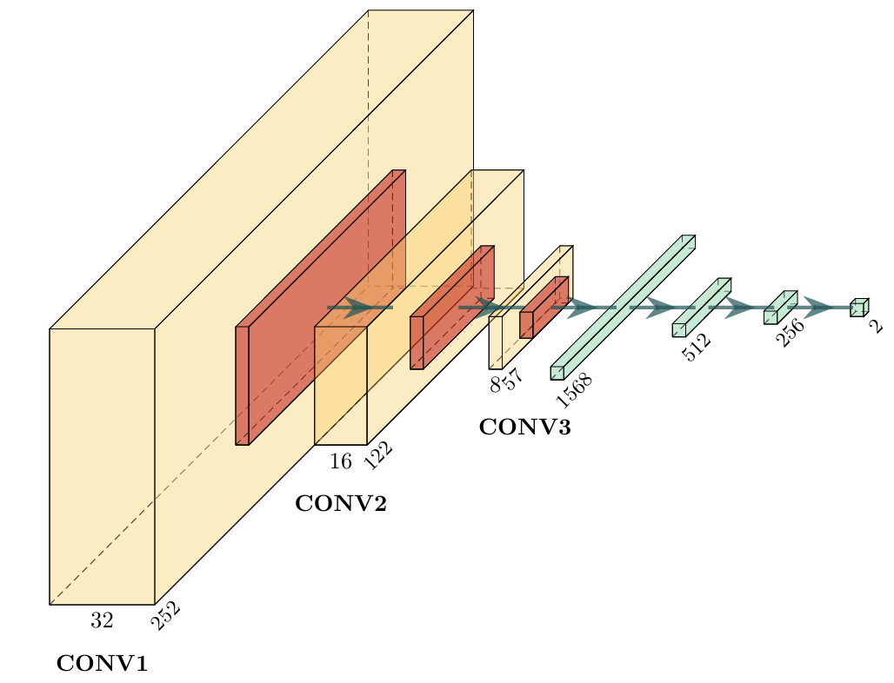

Vibrotactile System - Overview
In this thrust, we explore the use of vibrotactile data for monitoring manufacturing assembly processes to determine when an assembly step is complete or an error has occurred. We establish a set of procedures for collecting vibrotactile data. We also develop a set of data-driven methods for estimating task outcomes, terminating skills early, and selecting robust execution parameters. These learned models increase the reliability of the assembly skills while relying largely on self-supervised learning methods. Given their contact-rich nature, we focus on monitoring insertion tasks, such as fastener and connector insertion, with mainly rigid components at a centimeter scale. We explore learning across different materials and sizes of components.
TEACH: Data Collection
NIST Data Collection

LEGO Data Collection

LEARN: Model Training
For the vibrotactile pick/place skills, we train models for Outcome Detection and Termination Detection:
Skill |
Data Inputs |
|---|---|
Outcome Detection |
Audio Mel Spectogram Images (1s) |
Termination Detection |
Audio Mel Spectogram Images (0.5s) |
The Vibrotactile model is shown below: 
Where the model takes in 4 channels of their respective mel spectrograms and outputs either success or fail for outcome detection or nominal or terminate for termination detection.